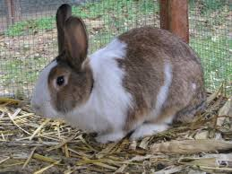

A házinyúl

A házinyulat haszonállatként elsõsorban húsa miatt tartják, emellett prém-, hobbi- és labornyúl tenyésztés is folyik.
Megjelenése
- 4 metszõfoggal rendelkezik.
- A kifejlett házinyúl tömege 1,5 kg-nál kezdõdik, a legnehezebb óriásnyulak viszont akár elérhetik a 12 kg-ot is.
- A test hossza 30-70 cm között változhat.
- A házinyúl testfelépítése, mint a legtöbb emlõsállatnál, fejre, törzsre és végtagokra tagolódik.
- A fej tojásdad, jellegzetes hosszú fülekkel, amelyek nagyon fontosak az állat hõháztartására nézve, mivel a nyulaknak igen kevés verejtékmirigyük van, ezért aztán a fülükön keresztül adják le a felesleges hõmennyiséget. Hallásuk igen jó, ezért egymás között az emberek számára nem, vagy csak alig hallható hangokkal kommunikálnak.
- A nyulak szeme viszonylag nagy, periférikus látásuk oldalra kiváló.
- Állandóan mozgó orrocskájuk egyedi és mulatságos látvány. Az orrmozgatás, szaknyelven orrjáték a szaglás elõsegítésére, de kommunikációra is szolgál.
- A nyulak nyaka igen rövid, szinte átmenet nélkül illeszkedik a törzshöz. A nyúl mellkasa széles és mély, a háta széles és jól izmolt, mely az ugráló helyváltoztatáshoz nélkülözhetetlen.
- A házinyúl végtagjai, a mellsõ és a hátsó lábak jellegzetesen az ugráló helyváltoztatás céljára módosultak, szorosan a testhez simulnak. A mellsõ végtagok viszonylag rövidebbek, egyenesek, a nyúl testét a talaj fölé emelik. Egyéb ugró mozgással közlekedõ állatfajokhoz képest (ugróegerek, kenguruk) viszonylag jól fejlettek. Ennek oka, hogy a nyulak ásnak és például tisztálkodásra is intenzíven használják mellsõ lábaikat.

Piller Ferenc Tamás